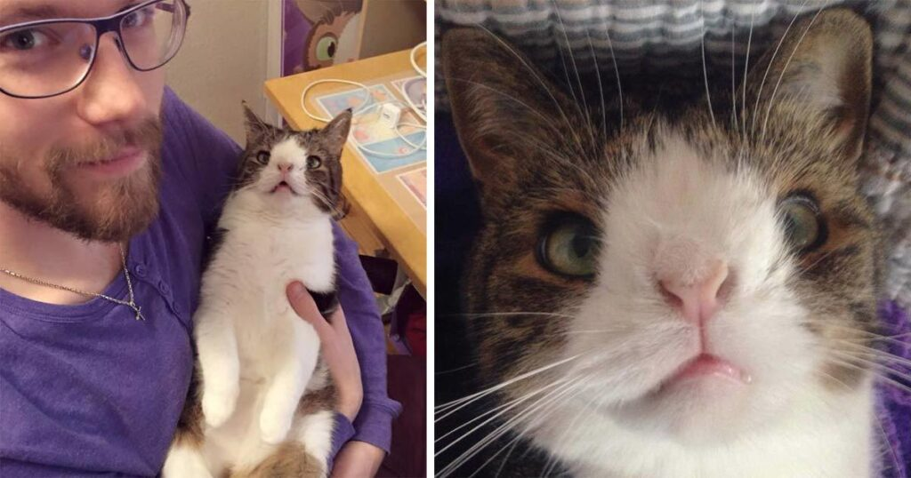

Meet Monty, The Cat With Down Syndrome That’s Capturing Hearts Around The World!

The internet has fallen in love with Monty, a very special cat with a huge heart and an adorable personality. You see, the cat has Down syndrome, but that doesn’t stop the beautiful feline from enjoying life to its fullest. The cat was living in an animal shelter when Michael Bjørn, and his partner, Mikala Klein found her and decided to adopt her. The two felt an instant connection to the cat and knew Monty was the right cat for them. No one before them showed any interest when it comes to adopting the cat simply because he looks different. Luckily, Monty now has a happy home and gets plenty of love and attention.
Michael Bjørn, and his partner, Mikala Klein from Rødovre outside Copenhagen in Denmark were looking to adopt a new cat.
So they visited a local shelter to see what they could find. That’s where they discovered a small cat – unlike any other they had ever seen.
Little did they expect the feline would capture their hearts forever.
His name is Monty.
He’d been at the shelter for quite a long time, with no one interested in adopting him. The reason? He looks a little… different.
But this couple instantly clicked with the unique-looking cat.
“We met him briefly and we were soon in love with him. We felt that he chose us,” Michael Bjørn told a local newspaper.
Once adopted and moved in however, the couple noticed that his behavior was also quite unique. For one thing, he would pee in his sleep.
They consulted a vet and were told that this behavior is common among older cats, who may regularly be unable to control their pee at random times.

But Monty was not very old and was only peeing now and then in his sleep.
They wondered if it was Monty’s way of marking his territory in the family since they had other cats at home. They decided to ask some friends who had no other pets to keep him for a while and see how it went, but that soon proved to not go so well.
“When we tried to drop him off, Mikala (Michael’s partner) was so sad that she couldn’t let him go. It was terribly embarrassing, but we had to take him back home,” Michael said.
They finally discovered, however, what made Monty so special: a chromosome abnormality was behind the peeing issue, among other things.

“There is little research on chromosomal abnormalities in animals, but you can compare it a bit with Down’s Syndrome in humans,” Michael explains.
But the small abnormality doesn’t otherwise really affect Monty’s behavior. According to Michael, he is just as playful as other cats.
“Monty is especially silly, playful, and always happy, just like a kitten, although he is five years old. He is incredibly gentle and very attached to me. He insists on sleeping between my legs every single night,” Michael said.
Monty is not only popular in his own family, he also has a following, with his own Facebook page and over 135,000 followers. There’s now even a collection of clothes and toys with a “Monty-logo” that fans can buy!

But this couple instantly clicked with the unique-looking cat.
“We met him briefly and we were soon in love with him. We felt that he chose us,” Michael Bjørn told a local newspaper.
Once adopted and moved in however, the couple noticed that his behavior was also quite unique. For one thing, he would pee in his sleep.
They consulted a vet and were told that this behavior is common among older cats, who may regularly be unable to control their pee at random times.

But Monty was not very old and was only peeing now and then in his sleep.
They wondered if it was Monty’s way of marking his territory in the family since they had other cats at home. They decided to ask some friends who had no other pets to keep him for a while and see how it went, but that soon proved to not go so well.
“When we tried to drop him off, Mikala (Michael’s partner) was so sad that she couldn’t let him go. It was terribly embarrassing, but we had to take him back home,” Michael said.
They finally discovered, however, what made Monty so special: a chromosome abnormality was behind the peeing issue, among other things.
The proceeds from the sales go to the shelter where Monty once lived – Cat Værn.
I think Monty is a serious superstar and his popularity is well deserved! SHARE his wonderful story if you agree!